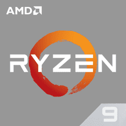

Historia

AMD (Advanced Micro Devices) es una empresa de semiconductores fundada en 1969 en Sunnyvale, California, Estados Unidos. A lo largo de su historia, AMD ha competido con Intel en el mercado de procesadores para computadoras personales, y ha lanzado muchos productos innovadores. Una de las historias más interesantes de AMD ocurrió en la década de 1990, cuando la empresa lanzó su procesador AMD K5. Este procesador estaba destinado a competir con los procesadores de Intel, pero su lanzamiento fue problemático. En primer lugar, el K5 tuvo dificultades para cumplir con las expectativas de rendimiento de AMD, lo que llevó a retrasos en su lanzamiento. Luego, cuando el K5 finalmente se lanzó, se encontró con un problema de marketing. AMD había utilizado el término "Pentium" en su publicidad para describir el rendimiento del K5, lo que llevó a una demanda de Intel que afirmaba que AMD estaba infringiendo su marca registrada. Como resultado, AMD tuvo que cambiar su publicidad y dejar de utilizar el término "Pentium". A pesar de estos problemas iniciales, el K5 se convirtió en un éxito para AMD y estableció la empresa como un competidor serio en el mercado de procesadores para computadoras personales. AMD continuó lanzando procesadores innovadores en las décadas siguientes, como el Athlon en la década de 2000 y el Ryzen en la década de 2010. En la actualidad, AMD es una empresa líder en el mercado de procesadores y ha lanzado productos como el Ryzen Threadripper, que ofrece un rendimiento impresionante para usuarios avanzados y creadores de contenido. La historia de AMD es una historia de innovación y competencia en el mercado de procesadores, y la empresa sigue siendo un jugador importante en la industria de la tecnología.
Am2901
El AMD Am2901 es un procesador lógico de bits de 4 bits que se utilizó en una variedad de aplicaciones de sistemas digitales, incluidos microprocesadores, controladores de dispositivos y procesadores de señales. A continuación, se detallan algunas de las características del Am2901:
- Arquitectura de procesador de bits: el Am2901 es un procesador de bits de 4 bits, lo que significa que opera en grupos de 4 bits en lugar de 8 o 16 bits.
- Diseño modular: el Am2901 está diseñado para ser utilizado en módulos interconectables, lo que permite la creación de procesadores más grandes y complejos mediante la conexión de varios módulos.
- Funcionalidad aritmética: el Am2901 cuenta con una amplia gama de funciones aritméticas y lógicas, lo que lo convierte en una herramienta muy útil para aplicaciones que requieren cálculos precisos.
- Velocidad de reloj: el Am2901 es capaz de operar a velocidades de reloj de hasta 100 MHz, lo que lo hace ideal para aplicaciones que requieren un alto rendimiento.
- Bajo consumo de energía: a pesar de su alto rendimiento, el Am2901 consume muy poca energía, lo que lo hace ideal para aplicaciones en dispositivos con baterías.
- Soporte para múltiples modos de operación: el Am2901 admite varios modos de operación, lo que lo hace muy versátil y adecuado para una amplia gama de aplicaciones.
En resumen, el Am2901 de AMD es un procesador lógico de bits de 4 bits que es conocido por su arquitectura modular, su amplia gama de funciones aritméticas y lógicas, su alto rendimiento y su bajo consumo de energía. Estas características lo hacen ideal para una amplia gama de aplicaciones en sistemas digitales.
AMD 2900
El AMD 2900 es una familia de chips de circuitos integrados diseñados por Advanced Micro Devices (AMD) en la década de 1970 y 1980. Estos chips se utilizaron en una variedad de aplicaciones, incluidos sistemas informáticos, equipos de comunicaciones y sistemas militares.
Las características del AMD 2900 incluyen:
- Arquitectura de procesamiento de datos en serie de alta velocidad, que permitía el procesamiento de datos en tiempo real.
- Diseño de chip altamente modular y escalable, lo que permitía la creación de sistemas informáticos personalizados para satisfacer las necesidades de aplicaciones específicas.
- Capacidad para operar a velocidades de reloj muy altas, lo que lo hacía adecuado para aplicaciones de procesamiento de señales de alta velocidad.
- Tecnología CMOS (complementary metal-oxide-semiconductor), que reducía la disipación de energía y el consumo de energía.
La historia del AMD 2900 se remonta a la década de 1970, cuando AMD comenzó a diseñar circuitos integrados personalizados para el mercado militar. En 1975, AMD lanzó el primer chip de la serie 2900, el AM2901, que se convirtió en un gran éxito. Este chip se utilizó en una amplia variedad de sistemas, incluidos los sistemas de defensa y los sistemas informáticos. A medida que la serie 2900 creció, AMD continuó mejorando y expandiendo la familia de chips. En 1980, AMD lanzó el AM2903, que fue el primer chip de microprocesador de la compañía. En 1982, AMD lanzó el AM29000, que fue el primer microprocesador de 32 bits de la compañía y se convirtió en una parte integral de muchos sistemas informáticos y de control industrial. A lo largo de la década de 1980, AMD continuó mejorando la serie 2900 y lanzó una serie de nuevos chips, incluido el AM2909, que fue uno de los primeros chips de lógica programable de campo (FPLA), y el AM29116, que fue uno de los primeros chips de memoria RAM estática (SRAM) de alta velocidad. En resumen, el AMD 2900 es una familia de chips de circuitos integrados altamente modulares y escalables que se utilizaron en una variedad de aplicaciones en la década de 1970 y 1980. Estos chips ofrecían capacidades de procesamiento en tiempo real, alta velocidad y tecnología CMOS de baja potencia, lo que los hacía adecuados para una amplia gama de aplicaciones.
No X-86
La arquitectura no-x86 de AMD se refiere a los procesadores de la compañía que no están basados en la arquitectura x86 de Intel. Algunas de las características de la arquitectura no-x86 de AMD incluyen:
- Diseño RISC (Reduced Instruction Set Computing): A diferencia de la arquitectura x86 que utiliza un conjunto de instrucciones complejas, la arquitectura no-x86 de AMD utiliza un conjunto de instrucciones reducido y más simples, lo que permite un procesamiento más rápido y eficiente.
- Mayor eficiencia energética: Los procesadores de la arquitectura no-x86 de AMD son conocidos por tener una mayor eficiencia energética que los procesadores x86. Esto se debe en parte al diseño RISC y a la tecnología de fabricación avanzada utilizada en la producción de estos procesadores.
- Utilización en servidores y centros de datos: La arquitectura no-x86 de AMD también se utiliza en servidores y centros de datos. La eficiencia energética y el diseño RISC son beneficiosos en este entorno, ya que permiten un procesamiento más rápido y eficiente, lo que puede reducir el consumo de energía y el costo total de propiedad.
- Tecnología CMOS (complementary metal-oxide-semiconductor), que reducía la disipación de energía y el consumo de energía.
- Variedad de arquitecturas: La arquitectura no-x86 de AMD abarca una variedad de arquitecturas, incluyendo ARM, MIPS y PowerPC, lo que permite a la compañía ofrecer soluciones personalizadas a diferentes clientes y aplicaciones.
En resumen, la arquitectura no-x86 de AMD se caracteriza por su diseño RISC, mayor eficiencia energética, uso en dispositivos móviles, servidores y centros de datos, y su variedad de arquitecturas que permite soluciones personalizadas para diferentes clientes y aplicaciones.
Arquitectura Zen
La arquitectura Zen de AMD es una arquitectura de procesador de 64 bits que se utiliza en sus procesadores Ryzen, EPYC y Threadripper. Algunas de las características más importantes de la arquitectura Zen son:
- Núcleos de CPU: los procesadores basados en la arquitectura Zen pueden tener hasta 16 núcleos de CPU, cada uno de los cuales tiene dos subprocesos, lo que permite hasta 32 subprocesos en un solo procesador.
- Tecnología de proceso FinFET de 14nm: La arquitectura Zen se fabrica utilizando tecnología de proceso de 14nm FinFET, que proporciona una eficiencia energética mejorada y una mayor velocidad de reloj en comparación con los procesadores anteriores de AMD.
- Cache L3 unificado: la arquitectura Zen utiliza una jerarquía de caché de tres niveles, con un caché L3 unificado que se comparte entre todos los núcleos de la CPU.
- Soporte para memoria DDR4: los procesadores basados en la arquitectura Zen admiten memoria DDR4 de alta velocidad, que proporciona un ancho de banda de memoria mejorado en comparación con la memoria DDR3 utilizada en procesadores anteriores de AMD.
- Controlador de memoria integrado: la arquitectura Zen incluye un controlador de memoria integrado que proporciona una conexión directa y de baja latencia entre el procesador y la memoria.
- Simultaneous Multithreading (SMT): AMD llama a su tecnología SMT como Simultaneous Multi-Threading, que permite que cada núcleo de la CPU maneje dos subprocesos al mismo tiempo, mejorando el rendimiento y la eficiencia energética.
- Precision Boost: La arquitectura Zen de AMD incluye Precision Boost, una tecnología que ajusta automáticamente la velocidad del reloj de la CPU en función de la carga de trabajo.
- Extended Frequency Range (XFR): La arquitectura Zen también incluye Extended Frequency Range (XFR), que permite que la velocidad del reloj de la CPU aumente automáticamente por encima de la frecuencia base si las condiciones térmicas lo permiten.
En conjunto, la arquitectura Zen proporciona una mejora significativa en el rendimiento y la eficiencia energética en comparación con los procesadores anteriores de AMD, lo que la convierte en una opción popular para aplicaciones de alto rendimiento y servidores.
Lista de procesadores
| Procesador | Nucelos | Arquitectura | Frecuencias | Socket | Fecha de lanzamiento |
|---|---|---|---|---|---|
 Ryzen 3 |
4/8 hilos | Zen | 3.6GHz - 3.8GHz | Am4 | 2017 |
Ryzen 5 |
6/12 hilos | Zen | 3.5GHz-4.4Ghz | AM4 | 2017 |
Ryzen 7 |
8/16 hilos | Zen | 3.8GHz-4.7GHz | AM4 | 2017 |
|  Ryzen 9 |
12/24 hilos | Zen | 3.7GHz-4.8GHz | AM4 | 2019 |
Historia
Intel es una compañía multinacional de tecnología que se dedica al diseño y fabricación de microprocesadores, chips y otros componentes de hardware. Fue fundada en 1968 por Robert Noyce y Gordon Moore en Mountain View, California.
En sus primeros años, Intel se centró en la producción de memoria semiconductora, pero en la década de 1970, la compañía comenzó a investigar y desarrollar microprocesadores. En 1971, Intel lanzó el primer microprocesador comercial, el Intel 4004, que tenía solo 2.300 transistores y fue diseñado para calculadoras.
En los años siguientes, Intel lanzó una serie de microprocesadores cada vez más avanzados, incluyendo el Intel 8008 y el Intel 8080. En 1978, Intel lanzó el Intel 8086, que fue el primer procesador de 16 bits y el predecesor del popular Intel 8088, que se utilizó en la primera PC de IBM.
A lo largo de los años, Intel ha seguido innovando y desarrollando procesadores cada vez más potentes y avanzados. En 1985, lanzaron el Intel 386, que fue el primer procesador de 32 bits y se convirtió en el estándar de la industria para PC de escritorio y servidores. En 1993, Intel lanzó el procesador Pentium, que fue uno de los procesadores más populares y utilizados de la historia.
En la década de 2000, Intel se enfrentó a una competencia cada vez mayor de otros fabricantes de procesadores, como AMD. Sin embargo, la compañía continuó innovando y lanzando productos nuevos, incluyendo la línea Core de procesadores, que se lanzó en 2006.
En los últimos años, Intel ha ampliado su gama de productos para incluir otros componentes de hardware, como chips gráficos y dispositivos de almacenamiento. La compañía también se ha centrado en el desarrollo de tecnologías emergentes, como la inteligencia artificial y el Internet de las cosas.
A lo largo de su historia, Intel ha sido una de las compañías de tecnología más influyentes e innovadoras del mundo. Sus procesadores y otros productos han impulsado la evolución de la informática y han sido fundamentales para el desarrollo de muchas otras tecnologías.
Procesadores de 4 bits
Los procesadores de 4 bits de Intel son una serie de microprocesadores de baja potencia que se diseñaron para aplicaciones especializadas y electrónica de consumo en la década de 1970. Algunas características de estos procesadores incluyen:
- Arquitectura de 4 bits: Estos procesadores tienen una arquitectura de 4 bits, lo que significa que pueden manejar datos y direcciones de memoria de hasta 4 bits de longitud.
- Velocidad de reloj baja: Los procesadores de 4 bits de Intel tienen velocidades de reloj muy bajas en comparación con los procesadores modernos. Por ejemplo, el Intel 4004, el primer microprocesador comercial de Intel, tenía una velocidad de reloj de solo 740 kHz.
- Baja potencia: Los procesadores de 4 bits de Intel se diseñaron para ser de baja potencia y se utilizaron principalmente en dispositivos electrónicos portátiles y de bajo consumo.
- Conjunto de instrucciones limitado: Estos procesadores tienen un conjunto de instrucciones limitado en comparación con los procesadores modernos. Por ejemplo, el Intel 4004 solo tenía 46 instrucciones.
- Controlador de memoria integrado: la arquitectura Zen incluye un controlador de memoria integrado que proporciona una conexión directa y de baja latencia entre el procesador y la memoria.
- Diseño de una sola CPU: Los procesadores de 4 bits de Intel se diseñaron como una única unidad de procesamiento central (CPU) que podía manejar todas las tareas necesarias en un dispositivo electrónico.
- Precision Boost: La arquitectura Zen de AMD incluye Precision Boost, una tecnología que ajusta automáticamente la velocidad del reloj de la CPU en función de la carga de trabajo.
Aunque los procesadores de 4 bits de Intel son obsoletos en la actualidad, sentaron las bases para el desarrollo de los procesadores modernos de 8, 16, 32 y 64 bits que se utilizan hoy en día en una amplia variedad de dispositivos electrónicos y computadoras.
Procesadores de 8 bits
Los procesadores de 8 bits de Intel son una serie de microprocesadores que se desarrollaron en la década de 1970 y 1980, y se utilizaron en una amplia variedad de aplicaciones, desde computadoras personales hasta dispositivos electrónicos y sistemas de control industrial. Algunas características de estos procesadores incluyen:
- Arquitectura de 8 bits: Los procesadores de 8 bits de Intel tienen una arquitectura de 8 bits, lo que significa que pueden manejar datos y direcciones de memoria de hasta 8 bits de longitud.
- Conjunto de instrucciones amplio: Estos procesadores tienen un conjunto de instrucciones más amplio en comparación con los procesadores de 4 bits, lo que les permite realizar una variedad más amplia de tareas.
- Velocidad de reloj más alta: Los procesadores de 8 bits de Intel tienen velocidades de reloj más altas que los procesadores de 4 bits, lo que les permite procesar datos y realizar tareas más rápidamente.
- Memoria más grande: Los procesadores de 8 bits de Intel pueden acceder a una memoria más grande que los procesadores de 4 bits, lo que les permite manejar aplicaciones más complejas.
- Diseño de una sola CPU: Al igual que los procesadores de 4 bits, los procesadores de 8 bits de Intel se diseñaron como una única unidad de procesamiento central (CPU) que podía manejar todas las tareas necesarias en un dispositivo electrónico.
- Consumo de energía moderado: Aunque no son tan eficientes en términos de energía como los procesadores modernos, los procesadores de 8 bits de Intel consumen menos energía que los procesadores de 16, 32 o 64 bits
En resumen, los procesadores de 8 bits de Intel representaron una mejora significativa en términos de velocidad, capacidad y funcionalidad en comparación con los procesadores de 4 bits. Fueron ampliamente utilizados en una variedad de aplicaciones y sentaron las bases para el desarrollo de procesadores más avanzados en las décadas siguientes.
Procesadores de 16 bits
Los procesadores de 16 bits de Intel son una serie de microprocesadores que se desarrollaron en la década de 1980 y se utilizaron en una amplia variedad de aplicaciones, desde sistemas embebidos hasta computadoras personales y servidores. Algunas características de estos procesadores incluyen:
- Arquitectura de 16 bits: Los procesadores de 16 bits de Intel tienen una arquitectura de 16 bits, lo que significa que pueden manejar datos y direcciones de memoria de hasta 16 bits de longitud.
- Velocidad de reloj más alta: Los procesadores de 16 bits de Intel tienen velocidades de reloj más altas que los procesadores de 8 bits, lo que les permite procesar datos y realizar tareas más rápidamente.
- Capacidad de direccionamiento más grande: Los procesadores de 16 bits de Intel pueden acceder a una memoria más grande que los procesadores de 8 bits, gracias a su capacidad de direccionamiento más grande.
- Conjunto de instrucciones más amplio: Estos procesadores tienen un conjunto de instrucciones más amplio que los procesadores de 8 bits, lo que les permite realizar una variedad más amplia de tareas.
- Capacidad de procesamiento de números enteros y de coma flotante: Los procesadores de 16 bits de Intel tienen capacidades mejoradas de procesamiento de números enteros y de coma flotante en comparación con los procesadores de 8 bits.
- Arquitectura segmentada: Los procesadores de 16 bits de Intel tienen una arquitectura segmentada, lo que significa que el procesamiento se divide en varias etapas, lo que aumenta la velocidad y la eficiencia del procesamiento.
- Modos de operación protegido y real: Los procesadores de 16 bits de Intel tienen dos modos de operación: el modo protegido y el modo real. El modo protegido se utiliza en sistemas operativos modernos para proporcionar una mayor seguridad y protección de memoria, mientras que el modo real es compatible con los sistemas operativos antiguos y permite un acceso directo a la memoria.
En resumen, los procesadores de 16 bits de Intel representaron un gran avance en términos de velocidad, capacidad y funcionalidad en comparación con los procesadores de 8 bits. Fueron ampliamente utilizados en una variedad de aplicaciones, incluyendo sistemas embebidos, computadoras personales y servidores.
Procesadores de 32 bits
Los procesadores de 32 bits de Intel son una serie de microprocesadores que se desarrollaron en la década de 1990 y se utilizaron en una amplia variedad de aplicaciones, desde computadoras personales hasta servidores y dispositivos móviles. Algunas características de estos procesadores incluyen:
- Arquitectura de 32 bits: Los procesadores de 32 bits de Intel tienen una arquitectura de 32 bits, lo que significa que pueden manejar datos y direcciones de memoria de hasta 32 bits de longitud.
- Velocidad de reloj más alta: Los procesadores de 32 bits de Intel tienen velocidades de reloj más altas que los procesadores de 16 bits, lo que les permite procesar datos y realizar tareas más rápidamente.
- Capacidad de direccionamiento más grande: Los procesadores de 32 bits de Intel pueden acceder a una memoria mucho más grande que los procesadores de 16 bits, gracias a su capacidad de direccionamiento más grande.
- Conjunto de instrucciones más amplio: Estos procesadores tienen un conjunto de instrucciones más amplio que los procesadores de 16 bits, lo que les permite realizar una variedad más amplia de tareas.
- Capacidad de procesamiento de números enteros y de coma flotante mejorada: Los procesadores de 32 bits de Intel tienen capacidades mejoradas de procesamiento de números enteros y de coma flotante en comparación con los procesadores de 16 bits.
- Arquitectura segmentada: Al igual que los procesadores de 16 bits, los procesadores de 32 bits de Intel tienen una arquitectura segmentada que aumenta la velocidad y la eficiencia del procesamiento.
- Modos de operación protegido, real y virtual: Los procesadores de 32 bits de Intel tienen tres modos de operación: el modo protegido, el modo real y el modo virtual. El modo protegido se utiliza en sistemas operativos modernos para proporcionar una mayor seguridad y protección de memoria, mientras que el modo real es compatible con los sistemas operativos antiguos y permite un acceso directo a la memoria. El modo virtual permite la creación de múltiples entornos de sistema operativo en un solo sistema físico.
En resumen, los procesadores de 32 bits de Intel representaron una mejora significativa en términos de velocidad, capacidad y funcionalidad en comparación con los procesadores de 16 bits. Fueron ampliamente utilizados en una variedad de aplicaciones, incluyendo computadoras personales, servidores y dispositivos móviles, y sentaron las bases para el desarrollo de procesadores aún más avanzados en las décadas siguientes.
Procesadores de 64 bits
Los procesadores de 64 bits de Intel son una evolución de los procesadores de 32 bits, que permiten un mayor rendimiento y una mayor capacidad de procesamiento de datos. Algunas de las características de estos procesadores son:
- Arquitectura de 64 bits: Los procesadores de 64 bits de Intel tienen una arquitectura de 64 bits, lo que significa que pueden manejar datos y direcciones de memoria de hasta 64 bits de longitud.
- Mayor capacidad de memoria: Los procesadores de 64 bits pueden acceder a una cantidad mucho mayor de memoria que los procesadores de 32 bits, lo que permite trabajar con grandes cantidades de datos y aplicaciones de memoria intensiva, como aplicaciones de diseño gráfico o de ingeniería.
- Conjunto de instrucciones más avanzado: Los procesadores de 64 bits tienen un conjunto de instrucciones más avanzado que los procesadores de 32 bits, lo que les permite realizar cálculos más complejos y mejorar la eficiencia del procesamiento.
- Capacidad de procesamiento de números enteros y de coma flotante mejorada: Al igual que los procesadores de 32 bits, los procesadores de 64 bits de Intel tienen capacidades mejoradas de procesamiento de números enteros y de coma flotante.
- Modo de operación de 64 bits y modo de compatibilidad: Los procesadores de 64 bits pueden funcionar tanto en modo de 64 bits como en modo de compatibilidad de 32 bits, lo que les permite ejecutar aplicaciones de 32 bits y sistemas operativos antiguos.
- Procesamiento de múltiples núcleos: Los procesadores de 64 bits de Intel suelen estar equipados con múltiples núcleos, lo que significa que pueden procesar múltiples tareas simultáneamente y mejorar el rendimiento general del sistema.
- Soporte de virtualización: Los procesadores de 64 bits de Intel también suelen tener soporte de virtualización, lo que permite la ejecución de múltiples sistemas operativos simultáneamente en una sola máquina.
En general, los procesadores de 64 bits de Intel ofrecen una mayor capacidad de procesamiento, una mayor capacidad de memoria y una mayor eficiencia en comparación con los procesadores de 32 bits. Son utilizados en una amplia gama de aplicaciones, desde computadoras personales hasta servidores y dispositivos móviles avanzados, y han permitido avances significativos en áreas como la inteligencia artificial, la ciencia de datos y la tecnología de la información.